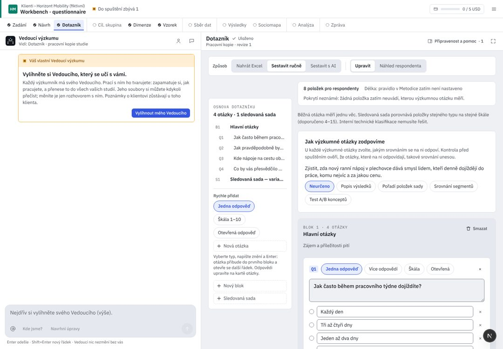

Klienti / Pivovar Zlatá Hora
Vnímání značek ležáků 2026
Hledat nebo spustit…⌘K
Vše
Čeká na vás
Posoudit návrh dotazníku Vnímání značek ležáků 2026 · DotazníkDoplnit rozhodnutí do Zadání Vnímání značek ležáků 2026 · ZadáníZnalosti ke schválení Pivovar Zlatá HoraPravidla Deep Research ke schválení Nastavení · Deep ResearchPřejít
Klienti GKPivovar Zlatá Hora klientVnímání značek ležáků 2026 přehled studie · 2 čekají na vásZnalosti klienta Pivovar Zlatá HoraNastavení GNAkce
Použít jako základ nového výzkumu design této studieNový výzkum u klienta Pivovar Zlatá HoraNPřidat podklady soubory, tabulky, textUAnalyzuj zadání úloha Vedoucího≤ 0,40 USDSpustit výzkum Sběr dat · Kontrola a spuštěníStáhnout zprávu DOCX nebo PDF↑↓ vybratEnter otevřítEsc zavřít? všechny zkratky
0 běží2 čekají
Dotazníkkrok 3 z 11Čeká na vásPosoudit návrh Vedoucíhoa 1 na jiném krokuNávrh se změnil od běhu 1 · nový běh na Sběru dat
Prototyp · stav
{{np.title}} · {{np.sub}}
{{x.where}}{{x.why}}nepřečteno
Zatím bez otázek
pište přímo semS1
Sada: Značky ležáků · 7 značekuž je v dotazníku, protože ji drží Návrh; otázky kolem ní doplníte vy nebo Vedoucí
NávrhExcel s dotazníkem přiložte Vedoucímu vlevo; převede ho na návrh po položkách. Bez souboru vám dotazník navrhne ze Zadání, Návrhu, znalostí klienta a rešerše.
Úprava dotazníku: {{propCount}} · vyberte, co přijmout; vaše bloky zůstanou
Přijato {{propSel}} z 3 změn. Ostatní zůstávají v návrhu, dokud je nezahodíte.
B1
Znalost a pití značek
3 otázkyQ1Více odpovědíměří VO1
Q2Jedna odpověďměří VO1
Podmínka zobrazení · jen kdo v Q1 zvolil Zlatá HoraBěh s podmínkou zatím neumí AIA odeslat; podmínku proto nelze zapnout. Uloží se, až to půjde.
Q3Škálaneměří žádnou výzkumnou otázku
Rozsah
Škála 1–101 = velmi špatně · 10 = výborněMěří
výrok
Nakolik značka {objekt} působí moderně?přijato z návrhu · měří VO3 a ověří hypotézu H2
Otázka na známost značky (filtr „jen kdo zná“) zatím není: běh by ji odmítl, proto tu přepínač chybí.
Náhled respondenta
tak, jak otázku uvidí; škály v jejich rozsahuQ1. Které značky ležáků znáte, alespoň podle jména?
více odpovědí · 8 možností
Q2. Kterou značku ležáku pijete nejčastěji?
jedna odpověď · jen kdo v Q1 zvolil Zlatá Hora (zatím vypnuto)
Q3. Jak pravděpodobně si Zlatou Horu 12° koupíte v příštím měsíci?{{n}}
1 = určitě ne · {{q3max}} = určitě ano
S1. Jak celkově hodnotíte značku Zlatá Hora 12°?
12345678910
a stejně pro dalších 6 značek
+ 18 dalších otázek v blocích B2 a B3.
UX kritika · Dotazník
Nejhustší krok: otázky, škály, sady, podmínky, vazby na výzkumné otázky a návrhy AI. Dnes náhled lže o škálách, návrh AI jde přijmout jen celý a nabízí přepínače, které běh odmítne. Kód d5d36b25; R/ = apps/web/src/components/rehome/research/, RQ/ = apps/web/src/research/.
Dnes v AIA (workbench, 1440 px)

{{c.l}}{{c.t}}
- {{x.t}}{{x.a}}